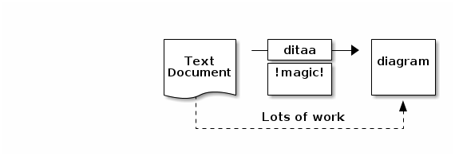
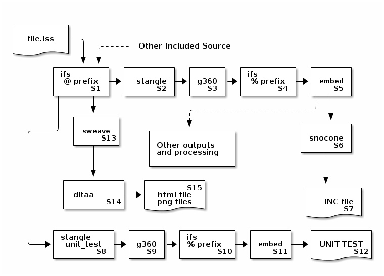

The idea is to produce a batteries included version of SNOBOL4 that can be used for scripting, CGI applications, GUI applications and general programming. SNOLIB is a work in progress. I don't expect to complete it, but will just keep adding and changing components as my needs change.
Most of the components are .lss files which are literate SNOBOL4. These files are run through utility “stangle” to produce source. The source is then run through “ifs” to process %if conditionals and %include. The final phase runs the code through “embed” which can separate files and run any additional needed processing.
The majority of these library routines have been written by others. Gimpel, Budne and many others have provided useful routines for SNOBOL4 over the years. Some of this work is original, but that pales in comparision to the useful nature of the routines that I have incorporated from other sources. Special thanks to Phil Budne for his work on CSNOBOL4.
To load all of these routines into the code
program, try
SLOAD('ALL.INC')
in the code utility. This takes but a fraction
of a second.
There are many more choices for programing now. C provides a reasonable choice for low-level development. For higher level languages, Scheme, Python and others are available. structured programming would seem like an odd choice. However, it is a simple language, and well suited to many problem domains. I believe that it can be a very productive choice, if some of its shortcomings can be addressed. Its very simplicity makes for productivity. SNOBOL4 has a very shallow learning curve. It is provably accessible to (for instance) people in the humanities. The compiler/interpreter is very small (by todays standards). We can view SNOBOL4 as a sophisticated version of BASIC. Since SNOBOL4 handles strings and parsing so well, it encourages meta-programming.
Given that things like SNOCONE to provide sntactic sugar and object oriented programming are simple to provide in SNOBOL4, the only reason that SNOBOL4 is not more popular is historical. SNOBOL4 was a standard language in the 70's, but was considered too resource intensive (compared with FORTRAN, COBOL and ASSEMBLER). When computing resources caught up to SNOBOL, other languages and systems were developed to take its place. Perl, Python, Ruby and other systems took its place. Still, SNOBOL4 provides most of the desirable features of these systems in a very simple and focussed system.
SNOBOL4's shortcomings are very well known, and are (in most cases) easy enough to overcome. The simplicity of the language allows for debugging and inspection tools to be written by even neophyte users. The complexity of pattern matching unfortunately encourages “cargo-cult” programming in the pattern sub-language. I want to pursue a SNOBOL6 effort, that melds the fundamentals of what makes SNOBOL4 great with the features of modern programming systems. This library is meant as a step in that direction. I do not believe ICON was the right approach, in that it eliminated too much of the essence of SNOBOL in an effort to modernize the language.
Javascript is the main competition. We need to work with Javascript, and thus this library provides JSON as an important element. Javascript is the code execution choice in the client browser, and we have to interoperate with it for modern application delivery. Thus CGI and the other HTML components are also critical pieces of this library.
At absolute worst, this work can be used to teach DOGs (Dumb Old Guys) new tricks, such as how browser based applications actually work at a low level. All components of this library are at a source level and are immediately inspectable and manipulable.
CSNOBOL4 is an implementation of SNOBOL4 based on the original SIL implementation. As such, it is very mature and stable, but, since the SIL reference implementation dates from 1969, doesn't offer any particular amenities for program development. Most programs were entered on punched cards, and programming was mostly a “pen and paper” activity. Computer time was very expensive, so the computer itself was not used to ease the programming process (except, perhaps, to generate cross-references).
This project is an attempt to address some of these shortcomings. In 1969, SNOBOL4 was run on an IBM 360 computer, which was considered a “Mainframe”. I started this development on an Intel ATOM based netbook, which is actually the slowest system I have access to. Still, this system is over one thousand times faster (1.6Ghz single core with hyper-threading) than the IBM 360 based on execution times published in SNOBOL4 reference “Green Book” using the IBM 360 SIL implementation and the CSNOBOL4 SIL implementation on my netbook. As well, my netbook has 1GB of memory, as compared to (typically) under 1MB for the IBM 360 (again, 1000 times more), and many times the mass storage capacity (160GB internal, and multiple terrabytes external - easily many thousand times the capacity). The other system I use for development is an Intel i3 system with 4GB of RAM. This system is over 2000 times faster than the IBM 360 at single thread execution, and over 4000 times faster because it is dual core. it has 4000 times the RAM of the IBM 360.
This 3 or more orders of magnitude increase in capacity should be
used to make the programming task easier. SNOBOL4 was originally,
and still is, generally an interpretive system. But, we have access
to additional utility software, and ideas which were not available
back in 1969. Automatic dependency checking with MAKE,
revision control with RCS (and, further systems like
GIT), full screen interactive editors, diagramming
tools, formatting, spell check, test driven development and Donald
Knuth's marvelous idea of “Literate Programming”.
Literate programming is the art of writing computer programs in such a way that the source code is presented clearly and engagingly for a human reader while still making it available to the compiler. Literate programming embeds source code within its technical documentation; it permits the code to be presented in an order that suits the human reader, then re-orders the code for compilation. It does require good tracking of line references back to the original literate source so that compile errors can be easily fixed.
Donald Knuth invented literate programming during the development of his TeX typesetting program in 1981 in response to a challenge from Tony Hoare to publish the source code to TeX. Knuth admits to being terrified at the prospect of publishing his code, but, drawing on the ideas of holon programming developed by Pierre Arnoul de Marneffe, Knuth developed the original WEB system that combined program code and technical documentation into a single document that provided a clear, engaging description to a human reader and simultaneously provided source code to the compiler.
This is an implementation of the tangle and
weave programs (here known as stangle
and sweave). This implementation is not tied to a
particular language, and will work with C, Pascal, Assembler,
SNOBOL4 and more, and “mixed language” files utilizing my
embed processor.
I have started to look at snocone to make SNOBOL4 more palatable to other developers. However snocone originally had no provision to generate library components; does not respect incoming -LINE directives; always enforced a MAIN routine; and guarantees label collision (L.1 etc.) if modules are attempted. rebus was another possibility, but snocone was chosen because it is easier to modify for my needs. See snocone for details of this language processor.
snocone has been modified to support the following features. Each of these features is included to help with developing modules (separate translation units).
| -m flag | The -m flag has been added to suppress the generation of a MAIN program in the translation output. This allows modules to be coded with snocone. |
| -CONTROL CARD passthrough | Control card (specifically -INCLUDE) are passed through to the output on translation. This allows snocone programs to use SNOBOL4 library routines. |
| // passthrough | Lines beginning with // are passed through to the output on translation. The leading // is stripped. Note that the line must begin with // without leading whitespace. These lines are retained and emitted when the procedure definitions are output. //-include allows files to be included and be available. // lines are deferred and output when function definitions are generated. //// passes through lines immediately. This is used to introduce SNOBOL4 directly into code. Again the line must begin with //// without leading whitespace. The //// is stripped and the resulting line is immediately generated. |
| LABEL= | Normally, snocone generates labels of the for L.n where n is a number beginning with 1. These labels will conflict if multiple translation units are combined. LABEL=string sets the leadin to be string instead of L. and can eliminate this problem. For example LABEL=INC. will generate labels INC.1, INC.2 etc. If -m is used to generate a module, and LABEL= is not used, the default label prefix will be the filename (with .sc removed). This gives good results for my code. |
| -LINE parsing |
|
| Prologue | If generating a MAIN., prologue now generates a call to CSNOBOL4. Extra options are not yet supported, and need to be manually inserted. The standard prologue is:
#!/usr/bin/bash
exec "snobol4" "-b" "$0" "$@"
-PLUSOPS 1
MAIN. CODE('MAIN')
|
The snocone translater is run after the code has been tangled. This is done because the code generation done by snocone is not oriented toward lines, but tokens, and conditionals would be difficult to do after tangling.
The //// feature is dangerous. If used in the middle of a sequence of snocone statements, the passthrough output may not appear at the correct point. However, it is useful outside of procedures, and can be used to completely implement a procedure in SNOBOL4. For example:
-INCLUDE 'CHARS.INC'
procedure incr(n) {
return n + 1;
}
procedure proc2(x) {
//// OUTPUT = 'test: x = ' x
}
This implements an incr procedure written in snocone,
and a proc2 procedure, declared in snocone but the body is
completely written in native SNOBOL4. The -INCLUDE
is actually a part of MAIN. Since CHARS.INC
simply assigns character values, that is then done after the
START. routine branches to MAIN. This
sequence is a bit different, but should work fine in practice. Note
that -INCLUDE is the same as ////-INCLUDE
'CHARS.INC' but is a bit more readable.
If generating a module (to be included in another program), the
include should be //-INCLUDE 'file' instead. This
forces the include (or other startup statement) to be generated
when the function definitions are output. This is needed because
modules do not begin execution at the top because they have no
main function.
Unit tests should be incorporated with the code; this means
that these tests are to be directly included into the literate
source. The STANGLE_ROOT=unit_test environment variable
to stangle is used to select an alternate root chunk
to generate unit tests.
These components were not developed using TDD (test driven
development). However, a test section has been added as a
<<unit_test>> root code chunk to each of the
library components. Most of these are empty, and simply succeed. Some
do have action. The test component of FILE.lss is FILE.tst. This
is an executable and should return &CODE=0 on test success
and &CODE=1 on failure. If the test requires interactivity,
automatic verification may not be possible (see STCL.lss).
The workflow begins with preparing ideas. This is done as a mental process, and is recorded on computer with an editor, or transcribed from paper.
I generally use my own interactive editor cpmed to prepare documentation
and programs. I would not recommend that anyone else use it, but
the important characteristic is that it allows filtering of text
through external tools, like spell and fmt.
The purpose of a text editor (especially a programming editor) is to enter and revise ASCII (and, these days, UTF-8) text, conveniently and precisely. Text must be entered quickly in the format required by the language processor, and revisions should be fast and accurate. Any on-screen representation must facilitate these goals, without interfering with the creative process.
The text editor will be used in three “modes”. First is entering text, where the text is known, or being composed. This requires positioning to the entry location (via a find function, or by line number), a ruler to assist in horizontal formatting (possibly a margin bell or vertical rules, and tabulation controls).
The second mode is text revision. Again, rapid location to the position, from information given by the language processor (error message), or to other desired locations, followed by entry, deletion or replacement.
The third mode is simply reading. A clean and uncluttered display is best, perhaps assisted by line numbering or change notification devices.
Editing automation is important for routine use. Being able to integrate editing into other parts of the workflow is vital, and being able to bend the editor to the authors will is very useful, and makes for a satisfying experience.
The two editors in common use (vi and
emacs) have many of the desired traits. I use my
own editor, but the actual editor used is a personal decision of
the author.
Completed projects are to be browsed and read. Other peoples
idea recorded in computer form are also to be read. I found it
difficult to stretch the editor completely to browsing or reading
and not compromise the editing function (and have both work to my
satisfaction). So I introduce a tool called list for
this purpose. It provides nothing but a full-screen view of
the document with no other distractions to the reading process.
But, my preferred reading software is a web browser. I use the
Firefox Web Browser that provides a rich reading experience. A
document can be displayed with nice type fonts, and illustrations
are displayed.
For this reason, the target of the documention production process will be html format, suitable for rendering by Firefox. Other browsers may function as well.
Diagrams provide important insight into problems. I find that drawing a picture can help me reason about an issue, and that providing such illustration can help explain to others.
Entry of such diagrams may be difficult. We want the resultant diagram to render with Firefox. External drawing tools abound (for example, dia). But, our primary tool is the editor, and we want to capture diagrams without excessively interrupting the edit process.
To this end, I have been using a tool called ditaa. This takes a diagram in the document, represented as simple “ASCII art”, and converts it to a “.png” format suitable for rendering by Firefox.
ditaa is not included in this archive. ditaa is a
JAVA application, and will require the installation of
a JAVA run-time (JRE). ditaa is available
(free software) from
ditaa.sourceforge.net. ditaa may be available in your
package repositories (if you are using Linux). It comes in the
repositories for Fedora (yum install ditaa).
A C compiler will also be needed for some of the components
(P64, FFI, JIT and the compile utility). The
compile utility will also require a source distribution
of CSNOBOL4.
If these components are not desired, the Makefile can be edited to remove them.
ditaa is run as a filter for html files, where it locates diagrams, converts them, and inserts the correct reference into the resultant (new) html code. An example (from the ditaa documentation) follows:
A benefit to using ditaa as compared to an external drawing tool is that the image is available (albeit in a cruder form) when viewing the ASCII source in the editor, or list tool.
Being able to capture editing changes and revert changes made in error is a useful feature of modern programming environments. I use RCS for this purpose. There are distributed system (such as GIT) in use today. RCS is nice in that it is very simple, and easy to use. Since I generally work on projects alone, I find RCS entirely suitable.
The literate source itself may be broken into multiple source files
for convenience of editing. There should be a single “main”
literate source file, that includes other files as needed for
the project. Thus, processing begins with the ifs
utility. The environment variable IFSLC=@ is set
to define the lead-in character to the @ sign. Includes are then
specified by @INCLUDE(FILE). LSS=SNOBOL4
(or C, or ASM) to allow ifs to generate line references
to the literate source.
The combined literate source is then sent through
stangle. Again, LSS=SNOBOL4 is used to
generate appropriate line references for error tracking.
After tangling, the source code is processed by ifs
again, to do conditional processing. This time, the “normal”
lead-in character % is used. This may also include needed files
to determine conditional processing. After this, the code is
processed with embed. This allows creation of needed
support files, and compilation using the C compiler and other needed
building tasks. The output of embed is the final INCLUDE
file or executable, if the source language was SNOBOL4. However,
it is possible that the source language may be something else
(for example, SNOCONE). If SNOCONE, the file must be processed by
snocone as either a module or main program.
IFSLC=@ LSS=SNOBOL4 ifs infile |
LSS=SNOBOL4 stangle |
LSS=SNOBOL4 ifs |
embed >outfile
The same commands are used to produce unit tests.
STANGLE_ROOT=unit_test is added to provide a different
root for the tangle operation. This should produce a runnable file
that implements unit tests for this component.
IFSLC=@ LSS=SNOBOL4 ifs infile |
STANGLE_ROOT=unit_test LSS=SNOBOL4 stangle |
LSS=SNOBOL4 ifs |
embed >outfile
The documentation is produced from the same literate source
file. Again, pieces may need to be gathered using ifs.
The literate source is then processed by sweave to
produce html output. A footer is added automatically referring
to index.html which should be the “head” of the
documentation for the project. The html is processed by the
ditaa utility to convert ASCII diagrams to png
diagrams in the html file.
Line number tracking is not important when generating the
documentation output so LSS is not used while weaving.
IFSLC=@ ifs infile | sweave > html_file ditaa html_file --html --overwrite
A single .lss input file will produce a library file or
an executable, an html documentation file with illustrations;
possibly C header files and loadable .so objects, and
unit tests. Since embed is used, other artifacts are
also easily generated (for example, data files for the unit tests).
From the diagram, twelve or so programs are typically executed to convert the literate source into the library or program, produce the documentation, and the unit test. Actually, if an external compiler is needed, possibly 16 or more programs may be invoked (C preprocessor, C compiler, linker) although these are not shown on the diagram.
Compile activities are coordinated using make.
S1 IFS @ PREFIX Collect all source together to process with stangle/sweave. The source may be in separate file to ease editing. S2 STANGLE <<>> Tangle together the chunks from the input producing a file in correct sequence for the language processor. Begin tangle with the <<>> chunk. S3 G360 Simple pre-processing of source code. Currently, replaces ← with =, but can do other macro expansion tasks. This will be important later, to add syntax sugar. S4 IFS % PREFIX Does file level includes and conditionals for the code. Sort out 32/64 bit issues, platform issues etc. at this phase. This is for software configuration. S5 EMBED Extracts in-line files (C, FORTRAN, data, etc.). Runs additional commands to process them (eg. C compiler to produce loadable objects). S6 SNOCONE If the source is SNOCONE rather than SNOBOL4, translate the SNOCONE to SNOBOL4. S7 INCLUDE FILE OR PROGRAM We now have the target include file or program. S8 STANGLE <> Tangle the source using < > as the root chunk. This extracts the unit test source. S9 SEE S3 S10 SEE S4 S11 SEE S5 S12 UNIT TEST We now have the unit test built and ready to be run. S13 SWEAVE Process the literate source, formatting documentation and code for publication. S14 DITAA Convert ASCII diagrams in documentations to real drawings S15 DOCUMENTATION HTML documentation prepared, with diagrams.
SNOLIB supplies a number of utilities to assist in the programming process. These are described in the Utilities document.
Repair UTF-8. Add to unit test coverage. FastCGI interface.